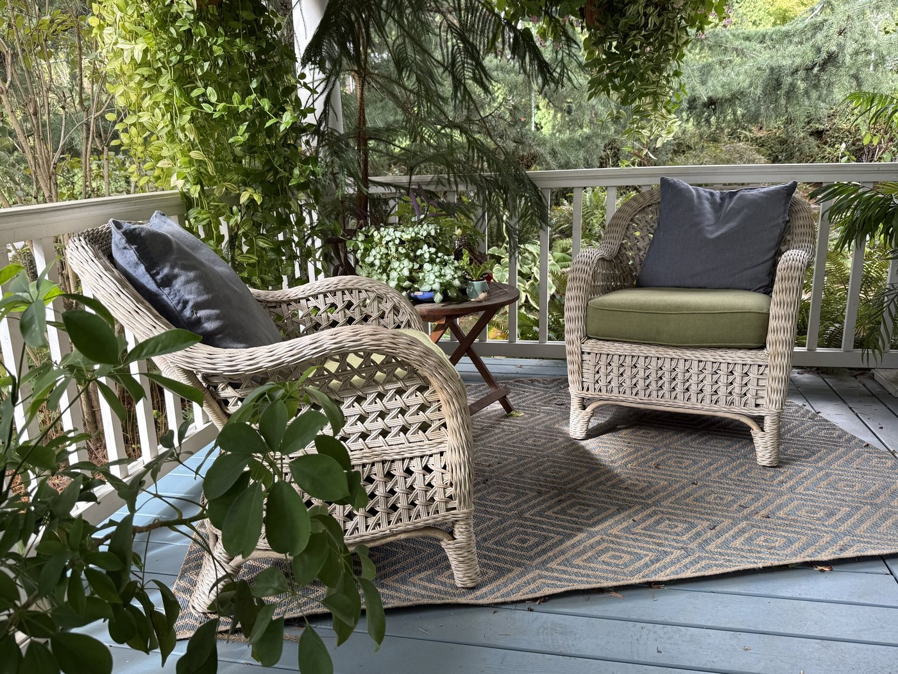
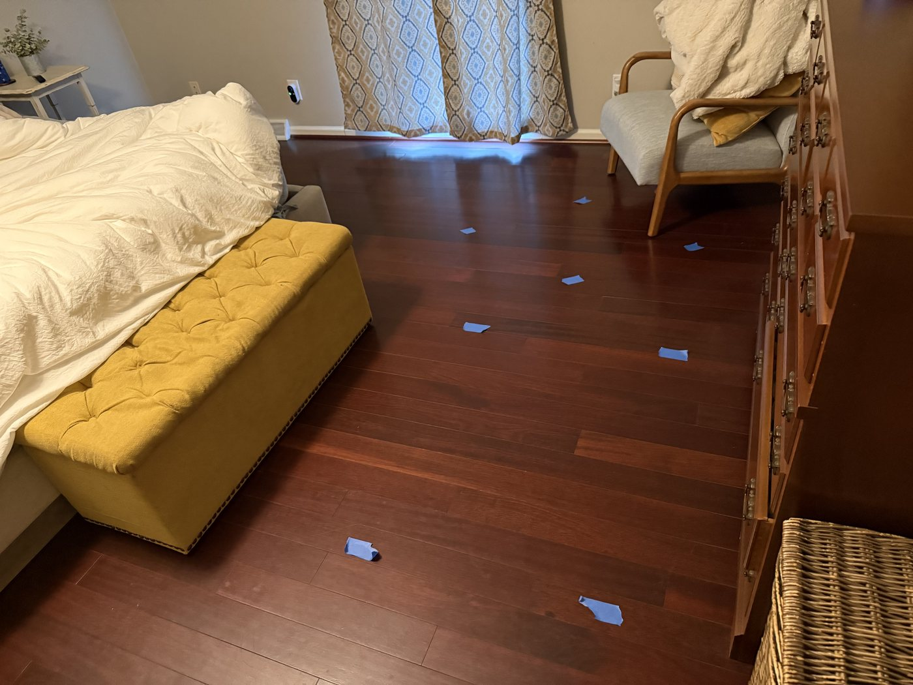
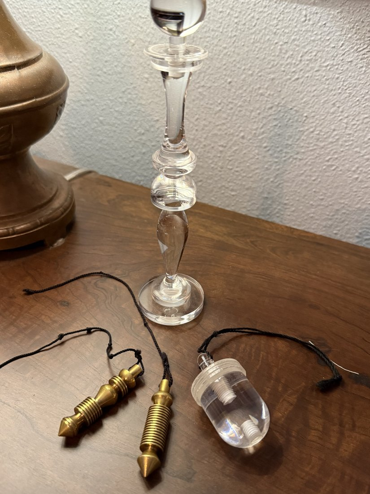

This is Call and Response, in practice. In how you sleep, which room you avoid, what never quite resolves no matter what else you’ve tried — this is how that gets heard, measured, and answered.
Two things hold true throughout. It’s never framed as one stressor instead of the other — most homes carry some combination of electromagnetic and geopathic stress, and addressing only one leaves the other still speaking. And this is grounded in research, and honest about where that research is still catching up — the goal is never to overclaim what any of it can promise.
Not a text thread, not a form — a free call. Texting and email take too long to actually share what matters: what you’ve noticed about your sleep, your space, how different rooms make you feel. Nothing here requires you to already have language for what’s wrong. Just what you’ve noticed.
Bobby walks the space room by room, starting where the electromagnetic load is highest — the electrical panel, routers, major appliances — then maps the geopathic stress points beneath and around it. Not one or the other; most homes carry both, and the assessment treats them that way from the start. The same rigor he once brought to tracing contaminants through groundwater, now brought to the space you live in every day.

BioGeometry® solutions go exactly where the reading calls for them — not a general clearing, but the placement that fits what was actually measured. The placements themselves are small and non-invasive: nothing drilled, wired, or altered in your home.
Immediately after placement, Bobby re-measures to confirm the reading holds — the same call-and-response rhythm described on the About page: measure, place a solution, re-measure, adjust. The aim isn’t to eliminate the field or wall it off — it’s to change its quality, so the space, and the body in it, can settle into coherence instead of staying braced against it.

Bobby returns two to three weeks later — not because anything is unfinished, but to allow the changes to create resonance within the space, and within its inhabitants. The measure of success isn’t a number on a meter. It’s a nervous system that finally gets permission to stand down instead of staying on alert.
If you’re curious but not yet convinced — if part of you is still wondering whether any of this will make a difference — the Introductory Consultation is designed for exactly that. It focuses on a single primary space, usually the bedroom, because that’s where the body does its most important work. Sleep is when we shift into the parasympathetic state — the mode where healing, regulation, and recovery actually happen. If the environment is working against that, everything else is harder. Starting there isn’t starting small. It’s starting where it matters most.
For anyone still wondering whether this will make a difference. Covers one primary space — usually the bedroom — where sleep, and the recovery that depends on it, actually happens.
Extends that same work to the full home.
For situations with more layers — heavier EMF environments, significant geopathic stress, or homes where the initial assessment reveals more complexity than expected. Sometimes that becomes clear in the first conversation. Sometimes Bobby only knows once he’s there.
The follow-up included in every tier isn’t just a check-in. It’s also a natural moment to look at the rest of the home with fresh eyes — and to decide together whether there’s more to address.
There’s no wrong place to start. There’s just the place that feels right for where you are right now.
The first call is free, and it’s the same starting point no matter how much or how little work follows.
Book a Free Call